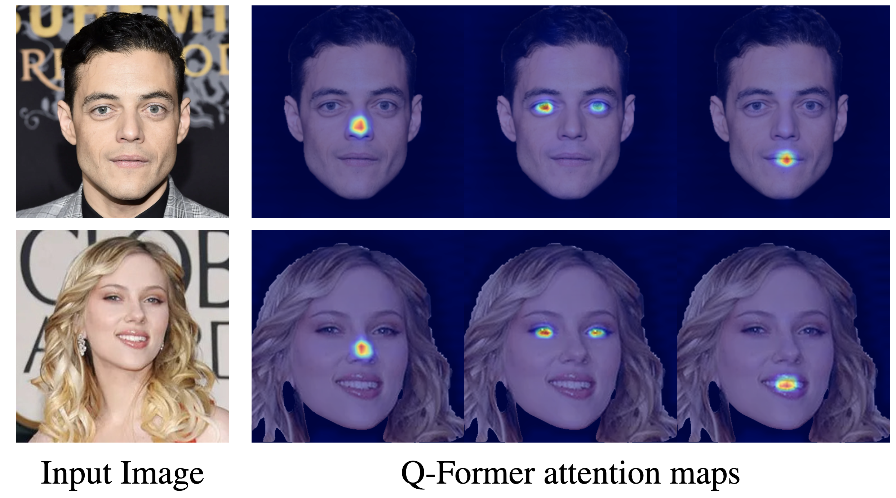
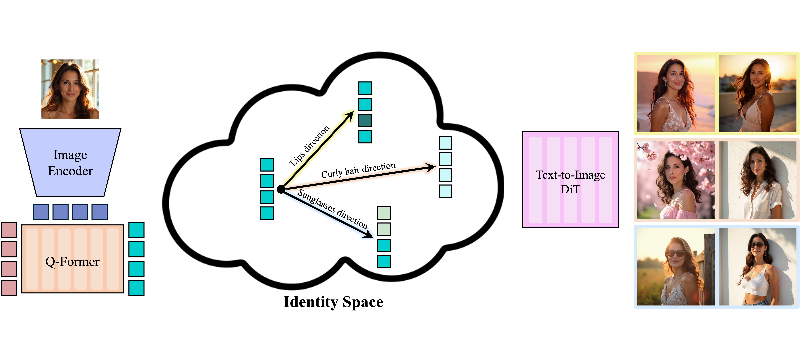
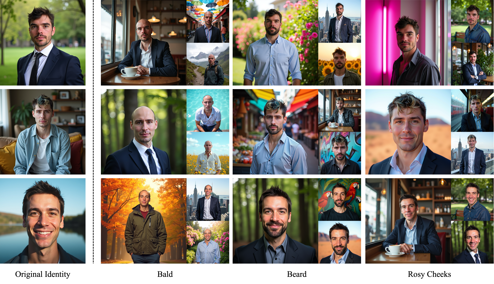
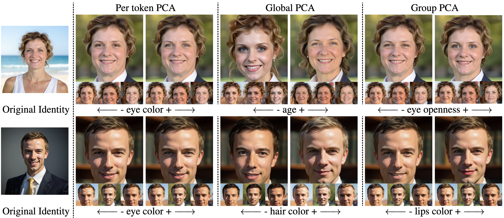
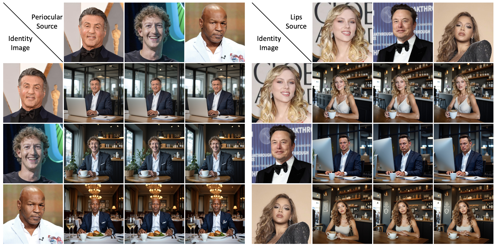
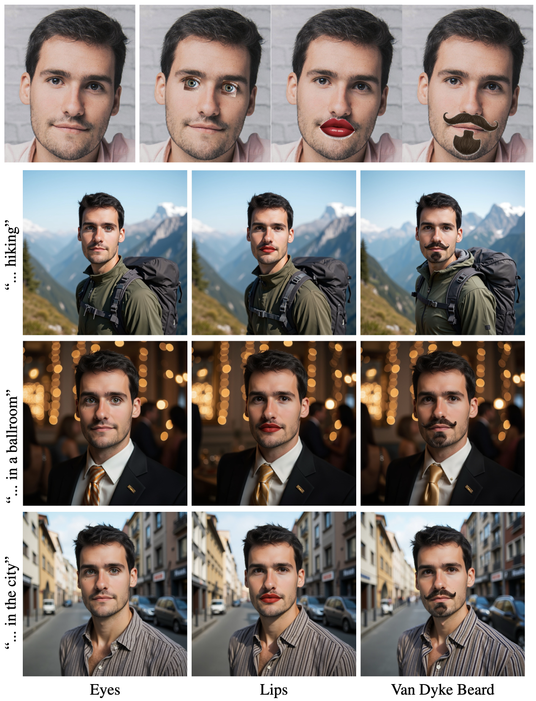

Generating and editing a person's face demands high precision, as even minor modifications can significantly alter a subject’s perceived identity. Current personalization and editing methods built on general-purpose text-to-image models, however, often lack the precision required for fine-grained facial edits. We present a method for fine-grained identity tuning in text-to-image personalization models. Unlike standard image editing, which operates on a given image, identity tuning modifies the latent representation of a specific identity, enabling the generation of diverse images that consistently depict the same edited identity. To enable fine-grained latent identity tuning, we explore the latent space of an encoder trained for text-to-image personalization. This space consists of a set of latent tokens that play distinct roles in capturing different aspects of an identity and often correspond to specific spatial or semantic facial regions. We show that meaningful directions can be identified within this space and within subspaces defined by selected tokens, enabling localized, fine-grained, and semantically coherent edits. We validate our approach through qualitative and quantitative experiments that demonstrate diverse localized facial edits while preserving cross-image identity consistency.






@misc{garibi2026latentidentitytuningtexttoimagepersonalization,
title={Latent-Identity Tuning in Text-to-Image Personalization Models},
author={Daniel Garibi and Ronen Kamenetsky and Hadar Averbuch-Elor and Daniel Cohen-Or and Or Patashnik},
year={2026},
eprint={2607.11885},
archivePrefix={arXiv},
primaryClass={cs.CV},
url={https://arxiv.org/abs/2607.11885},
}